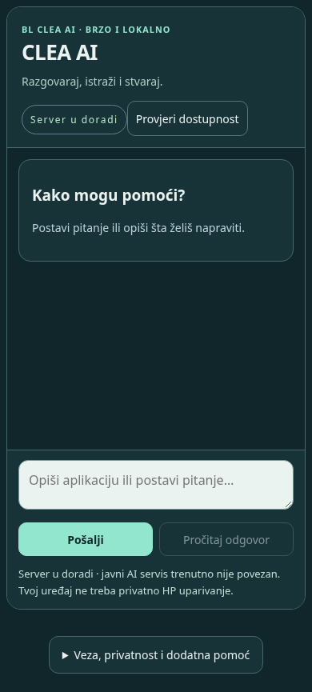

Jedan asistent.
Historija, odgovori uživo, tekstualni prilozi, izvori i zasebno označeni modeli i alati.
Jedna aplikacija za razgovor, Studio i Sense. Otvori je bez HP adrese, koda ili privatnog uparivanja. Dodatni alati su u meniju.
Preuzmi BL CLEA AI za Android ↓
Historija, odgovori uživo, tekstualni prilozi, izvori i zasebno označeni modeli i alati.
Opiši aplikaciju ili odaberi projekat. Draw/BIL alati stvaraju provjerljiv izvor, a rezultat dobija karticu za otvaranje i preuzimanje. Posao ostaje na HP-u i kad zatvoriš telefon.
Imenovane kontrole, vidljive upute, vođenje prema izmjerenom položaju i lokalni govor kada ga uređaj podržava.
Javni AI servis je trenutno u doradi. Studio, Draw i lokalni Sense alati ostaju dostupni. Razgovor s velikim modelom bit će dostupan tek kad zaštićena javna model veza stvarno bude povezana i provjerena. Uključivanje HP-a samo po sebi nije potvrda te veze.
Vlasnički alati: odvojeni su u meniju. Pristup privatnim projektima, diskovima i terminalu traži tvoju ranije odobrenu privatnu vezu. Korisnici ne dobivaju vlasnikov token ni datoteke.
Instalacija preko postojeće aplikacije zadržava sačuvano vlasničko uparivanje. Nemoj brisati podatke niti prvo deinstalirati aplikaciju.
CLEA7500 povezuje vlastitu CLEA logiku, BIL, Studio/Draw, znanje i alate sa zasebno licenciranim lokalnim Qwen modelom na serveru. APK ne sadrži Qwen težine, privatne dokumente ili pristupne ključeve.
Testna verzija. Izgradnja i potpis APK-a su provjereni; izvršavanje na fizičkom telefonu nije potvrđeno ovim zapisom. Nije izmjerena jednakost modelu70B.
SHA256
e3444f20c921f75291508307f7bcb04fbdaff8038d48cee1b9be5f6a917e28c7